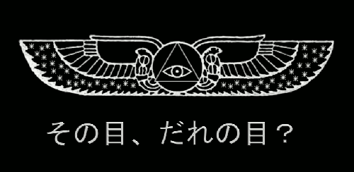
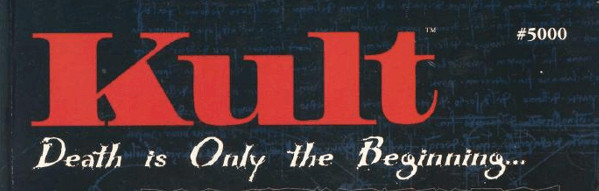
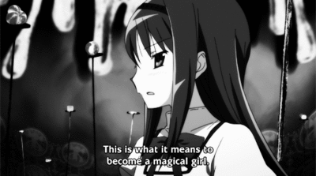
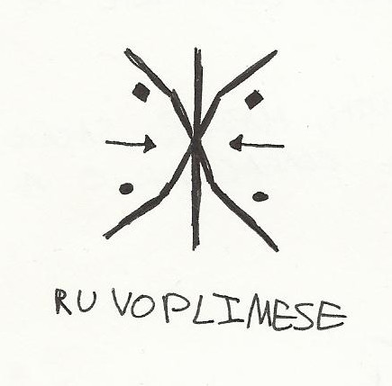
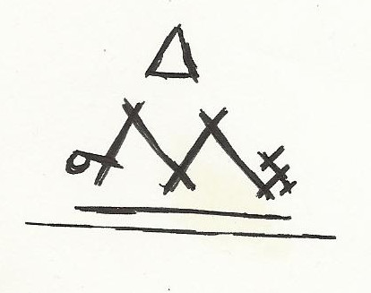
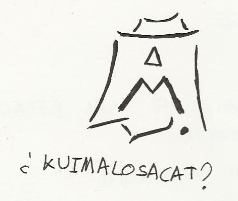

|
Ritual para la apertura de la Peligrosa Capilla
Autor : yemeth |
|

Este artículo pretende ser un complemento práctico a otro titulado “Iniciación: La producción de lo imposible” publicado tiempo atrás. Allí se hablaba de aquello que conocemos como “Iniciación” en la tradición esotérica occidental, el camino para salirse del camino.
Con este término nos referimos específicamente a la experiencia que se asocia para autores como Dion Fortune y sistemas como la A.·.A.·. con el sendero de Tav, que une las sephiroth de Malkuth y Yesod en el esquema que conocemos como “Árbol de la Vida”. (Acerca de tal esquema, recomiendo la lectura de “La Cábala Mística” de Dion Fortune, o “The Bride’s Reception” de Frater Achad).
En su Iniciación, el “aspirante” descubre y asume de manera práctica que el mundo no está compuesto tan solo por los cuatro elementos clásicos que conoce (estos cuatro elementos tomados de manera simbólica) y que componen la sephira de Malkuth, el mundo que nos es conocido. Existe lo que parece ser un quinto elemento, que subyace a todo. Se trata de una especie de substrato de vida presente en todas las cosas, tanto en las “vivas” como en aquellas que solemos considerar como inanimadas. Es aquello que Plotino llamó Alma, expresión de la Inteligencia, y que subyace a todo cuanto compone nuestra realidad física.
Existen diversos términos con los que se ha denominado a este proceso. Cada autor y corriente tienen sus propios términos: Peligrosa Capilla, Iniciación del Rey, Visión del Sagrado Ángel Guardián, o enfrentamiento con el Guardián Menor del Umbral y el posterior encuentro con el Mayor bloqueando el camino. Todos estos nombres apuntan hacia este lugar que a pesar de ser la primera iniciación de verdadera importancia suele pasarse de largo, especialmente ante el glamour de logros muy posteriores como son el caso del Conocimiento y Conversación del Ángel, o cruzar el Abismo.
Esta Iniciación es el verdadero comienzo del camino en la Alta Magia, y no puede ser otorgada por ninguna agencia humana, a pesar de que algunos insensatos afirmen que tal o cual Orden puede “iniciarte”. Eso no va así. Nadie puede hacerlo. La verdadera Iniciación sólo es dispensada por la propia realidad, no por agentes humanos. Una orden mágica (u otro tipo de organización o estructura) puede poner al aspirante en el camino correcto, pero la Iniciación en sí es un evento profundamente personal y explícitamente mágico que no puede producirse con los medios al alcance de ninguna organización, por poderosa que esta sea.
Un claro síntoma de la llegada de este evento, es la aparición de una cantidad abrumadora de sincronicidades, es decir, de eventos entre los que aparentemente no hay relación alguna de causalidad, pero que sin embargo parece que tuvieran relación causal. En condiciones normales experimentamos aparentes sincronías de vez en cuando: pensar en alguien con quien hace tiempo que no hablas y que ese día te escriba o te cruces con ella, o encontrarte en un estado emocional intenso y escuchar en la radio precisamente una canción que parece dirigida a ti, que habla justo de lo que te pasa. Esas cosas las explicamos recurriendo a la casualidad, y muy razonablemente, puesto que es totalmente normal que de cuando en cuando se produzca alguna coincidencia que parezca tener sentido a pesar de no existir una relación causal real entre las cosas que han sucedido.
Puede que la probabilidad de sacar el mismo resultado diez veces seguidas tirando un dado sea muy baja, pero si nos pasamos el día tirando dados a veces sucederá. Lo mismo nos pasa en la vida, que está llena de cosas que no coinciden, pero las que nos chocan y nos sorprenden son las que lo hacen.
Sin embargo, cuando estamos hablando de Iniciación, el flujo de casualidades se va a acelerar de tal manera que esa explicación de “casualidad” deja de funcionar. Cuando la realidad se comporta como un espejo, cuando responde a cada cosa que piensas a través de lo que percibes y observas una coordinación que necesitaría una vastísima inteligencia detrás para ser explicada, llega un momento en el que no vale la explicación racional, y aferrarse a ella solo produce más miedo y dolor. La realidad ha dejado de ajustarse a nuestras expectativas acerca de lo que es normal y esperable en ella. Y cuando esto sucede, nuestras ideas acerca de lo que es la realidad se derrumban. Todas. Uno se siente como si no supiera nada de nada. No es extraño que la mente se acelere y que sienta un pánico terrible mientras intenta reconstruir la realidad con una explicación razonable (aunque paranoica, si es producto del miedo), una vez descubre estructuras esenciales muy distintas a lo que uno creía dando forma a la realidad.
Además, lo que uno se va a encontrar en esa realidad que de pronto parece haber “despertado” es la propia Sombra, es decir, los contenidos del inconsciente, el fondo más traumático de uno mismo que es necesario limpiar para seguir adelante. Empieza la fase de “nigredo”. Podríamos tomar esto como una sesión de psicoanálisis brutal que te puede dejar la cabeza realmente sana, siempre que sobrevivas. Y lo de “sobrevivir” no ha de tomarse a la ligera. La pérdida de realidad y el intento desesperado de reconstruirla con cualquier cosa que tengas a mano es medicalizada como “psicosis”, y existe un riesgo fuerte de creer en realidades que sean incompatibles con el tipo de realidad en la que creen las personas adaptadas a la sociedad: si uno acaba solidificando su mente en torno a una realidad concreta de las que sugiere el flujo de sincronicidad, puede acabar en lo que Robert Anton Wilson llamó la “Vocación Permanente de la Psicosis”.
Esta advertencia no es ninguna broma. El mayor peligro no consiste en ser devorado por nosequé espíritu malvado, sino en fallar en el reajuste de nuestras ideas sobre la realidad a lo que esta nos muestra, de manera que nuestra nueva narrativa acerca de lo real resulte incompatible con las narrativas socialmente aceptables. Creer en la ficción equivocada (en lugar de en la ficción correcta, es decir, compartida por el resto de la gente) puede acabar contigo en un hospital psiquiátrico.
La sociedad llama cuerdo a aquel cuyas creencias sobre en qué consiste la realidad se circunscriben a los parámetros permitidos en una alucinación socialmente compartida, y psicótico a quien cree en su propia narrativa acerca de la realidad. La verdadera cordura consiste en atravesar la fantasía alucinatoria en la que nos sumerge el día a día y dejar de creer.
Hecha esta advertencia, el objetivo del ritual que presento en este artículo es poner en marcha este proceso.
Fue un ritual diseñado para mí mismo y no pretendía despertar lo que despertó, pero lo hizo. Muchas de las referencias que hay en el ritual apuntan a cosas que el lector no tiene por qué conocer, y por eso además del ritual incluyo una explicación acerca de qué significa el contexto narrativo de los componentes que utilicé en él. Espero con ello no solo hacer público mi ritual sino dar suficientes pistas para que el lector pueda construirse uno propio, que resuene con sus propios símbolos y mitología, y que así resulte pues más efectivo de lo que sería utilizar este.
“Para alcanzar esta esfera [Yesod] ha tenido que atravesar el camino de oscuridad en el que los Cuatro Elementos [Tav] le parecen el Universo entero. Pues, ¿cómo podría saber que no son más que el último de los 22 segmentos de la Serpiente que está enroscada en el Árbol? Asediado por repugnantes fantasmas de materia, irreales e ininteligibles, su ordalía es de terror y oscuridad. Si lo supera será solo por el favor de su propio Dios silencioso, extendido y exaltado dentro de él en virtud de su acto consciente al afrontar la prueba.”
[Aleister Crowley]
Advertencia final
No querría empezar sin una advertencia final. Esto es muy peligroso.
Y no se trata sólo de que puedas volverte espectacularmente loco -créeme, he visto cómo eso pasaba-, sino de que incluso si logras atravesar esta experiencia razonablemente cuerdo, no es más que el principio. Hay quien tras cruzar el Purgatorio cree haber llegado al final del camino y se viste de gran chamán, hay quien se nombra Maestro del Templo y piensa haber atravesado el Abismo que nos separa de los supernales en el Árbol de la Vida. Pero esto no es más que el primer gran paso de algo que se convertirá en toda tu vida.
Lo siguiente será llevar a tierra todo lo que se ha movido (y créeme que será mucho), un trabajo que puede llevarte años. Puede que tengas que entrar más de una vez para superar realmente la prueba, y puede que creas haber atravesado la Peligrosa Capilla cuando solo has paseado por ella y luego regresado a tu realidad normal. ¿Eres capaz de que se rompa tu realidad sin entrar en el terror cognitivo psicótico? ¿Has conocido a tu Guía? ¿Te ha desnudado y clavado ya en el corazón eso que se quedará ahí para siempre? Y la broma cósmica, ¿te ha hecho reír?
Es posible que desarrolles una fuerte lucha interior entre la vida normal y lo que se abre ante tí. Es posible que te sientas solo y alienado. Es posible que seas puesto a prueba para tener que decidir entre lo que tu ego quiere y el sendero mágico. Puede que tengas que sacrificar lo que más te importa. Puede que Ella te otorgue todo lo que crees que quieres para luego decirte, si de verdad quieres seguirme, déjalo atrás.
Si estás contento con tu vida, con tu familia o pareja o amigos, si no tienes un buen motivo, si no te gusta la idea de no poder ser nunca “normal”,... en definitiva, si no estás dispuesto a sacrificarlo todo para irte de aventuras, ni se te ocurra hacer esto.
La mayor parte de los hobbits se quedan toda su vida en la comarca, no viajan para buscar tesoros, y desde luego no se enfrentan a dragones terribles. Y no hay nada de malo en ello. El camino que te aguarda con la Iniciación tiene aristas terribles, y puede hundirte en la desesperación y causarte dolor hasta extremos difíciles de sospechar. La Alta Magia no tiene nada que ver con lo que vulgarmente se entiende por “espiritualidad”. No te va a dar paz mental ni te va a llevar a un Paraíso de nubes de algodón en el que todos se quieren mucho y se saludan sonrientes diciendo Namasté. Pero también es épico, y si lo tuyo es la aventura, es posible que no haya ninguna tan grande como esta.

El mundo de Kult
Cuando escribí este ritual, muchos de los símbolos y referencias que utilicé provenían de un juego de rol de mesa de terror llamado Kult. Básicamente lo que utilizo es parte de la cosmogonía del juego, esto es, su narración mítica acerca de en qué consiste el mundo. No hace falta que hayas jugado a este juego, ni siquiera que hayas jugado al rol, lo importante es esa narración acerca de qué es la realidad y el modo en que la utilizo en el ritual. Probablemente tengas narrativas que te resulten más cercanas, y si te aprovechas de ellas seguramente el efecto que causes en ti mismo sea mayor. Lo ideal sería que utilices algún medio artístico que te llegue de verdad, que sea capaz de provocar una respuesta emocional fuerte en ti.
Básicamente Kult es un juego que se desarrolla en la era actual. El mundo que nos rodea es una ilusión, y estamos encerrados en él gracias al Demiurgo y a huestes de monstruos de pesadilla cuyo objetivo es evitar que despertemos.
Al servicio del Demiurgo se encuentran los Arcontes, cada uno de los cuales corresponde a una sephira del Árbol de la Vida (es decir, tenemos al Arconte Kether, etcétera). Estos son los grandes lugartenientes de Dios por así decirlo, y cada uno tiene un palacio inmenso en la ciudad de Metrópolis a partir del cual ejerce su influencia.
Esta colosal ciudad de Metrópolis es el aspecto real del mundo. Cuando conseguimos derribar la ilusión en nuestras cabezas vemos el mundo tal como es: Una ciudad que no parece tener fin, habitada por los crueles servidores de los Arcontes y dominada por sus diez inmensos palacios.
El ser humano es inmortal, así que cuando “muere” es llevado al Infierno, donde es torturado hasta que pierde la memoria y puede ser devuelto a la Ilusión otra vez. Se dice que un bebé recién nacido llora al estar todavía presente en él un último recuerdo del infierno del que proviene.
Sin embargo no todo es malo. En particular uno de los Arcontes está con nosotros. Ella es Malkuth, la Arconte rebelde, que fue la responsable de fabricar la realidad aparente que constituye nuestra prisión, pero que acabó por ponerse del lado de la humanidad encerrada. Así, su objetivo es despertarnos, aunque para ello tenga que ser realmente dura con nosotros. Si le caemos en gracia, Malkuth nos puede someter a durísimas pruebas: pero su objetivo no es destruirnos, sino que a través del shock consigamos escapar de la hipnosis y podamos ver aquello que del mundo se nos oculta. Y este shock es a lo que vamos a llamar en espacio ritual.
Malkuth, como todos los Arcontes, tiene su propio edificio en Metrópolis, la ciudad que subyace a todas nuestras ciudades, y el ritual hace uso extensivo de ello. Puedes imaginarte su edificio como del tamaño de una montaña: las dimensiones aquí han de concebirse como brutales.
Cuanto más conozcas sobre Kult y más implicado emocionalmente puedas estar, mejor, pero otra opción que siempre será mejor es simplemente que captes los puntos clave en toda esta narrativa respecto al ritual para poder montar otro que utilice los mismos principios básicos pero con una historia que te resulte más cercana. Muchos años después de este ritual, rara vez utilizo la narrativa de Kult para mis rituales: son otras las obras de ficción que me llegan con la profundidad apropiada.
Por supuesto, esto de utilizar ficciones y no panteones clásicos de dioses y cosas así, es una perspectiva propia de lo que llamamos “Magia del Caos”. Si tu tendencia es otra, quizá quieras utilizar la mitología que te proporcione tu tradición. Si tienes fe en ella quizá te sirva de ayuda, pero creer ciegamente es siempre un arma de doble filo que puede facilitar que te veas atrapada en una ficción en concreto.

Ritual : Consagración de la base de operaciones de Malkuth
El objetivo original del ritual era enlazar el edificio en el que yo vivía por aquel entonces con el palacio de la Arconte Malkuth en Metrópolis. Quizá te funcione así, o quizá sea mejor adaptarlo más a lo que se pretende causar.
El ritual es bastante sencillo, y está dividido en tres partes. En cada una de ellas hay unas palabras que han de ser pronunciadas y un sígil para lanzar por el método que mejor te funcione. Probablemente también te resulte útil confeccionar sígiles propios, para hacerlos realmente tuyos.
La primera parte es una apertura, aunque también lleva en sí el eje del ritual, al pedir que se rompa la Ilusión que separa al Elíseo de Metrópolis.
La segunda parte es una llamada a Malkuth, como evocación.
En la tercera parte se completaba todo, otorgando a Malkuth el edificio en el cual vivía, de modo que pasara a formar parte de su Palacio en Metrópolis.
Ritual - Primera Parte
“Limpio mi mente de influencia externa y limpio este círculo en el que me ofrezco como canal entre el Elíseo y Metrópolis.
SEA LA PUERTA ABIERTA.
ES MI VOLUNTAD QUE SE ROMPA LA ILUSIÓN QUE SEPARA EL ELÍSEO DE METRÓPOLIS.

(el sígil está hecho a partir de la frase que comienza con “es mi voluntad”, y la palabra con letras desordenadas debajo, es un mantra hecho con trozos de esa misma frase para repetirlo mientras me concentraba en el sígil)
Ritual - Segunda Parte
LLAMO TU ATENCIÓN OH MALKUTH PARA REGALARTE CON EL ELÍSEO QUE TU CREASTE.
ACUDE A MI EVOCACIÓN OH MALKUTH.
TU PRESENCIA ES REQUERIDA POR QUIEN COMPARTE TU MISIÓN Y AMA A LA HUMANIDAD ESCLAVIZADA

Ritual - Tercera Parte
CONSAGRO ESTE EDIFICIO DE PIEDRA OH MALKUTH A TU SERVICIO, PARA QUE FORME PARTE DE TU INMORTAL PALACIO.
SERÁN ESTAS PIEDRAS TU PALACIO EN [LOCALIDAD], Y YO LO LLENARÉ DE TU PODER.
YO TE EMPUJO A LLENAR CADA PARTE DE ESTE EDIFICIO Y LAS ALMAS DE LOS QUE LO HABITAN.
PREPARADO PARA TI, ESTA ES PARTE DE TU PALACIO AHORA.
OH GRAN ARCONTE MALKUTH, HAZME SABER SI ACEPTAS ESTE LUGAR Y MI SERVICIO AL CONSAGRARLO A TI.

Notas finales
Unos meses después de mi Iniciación volví a llevar a cabo el ritual, porque necesitaba saber si todo había sido una especie de alucinación, o si había sucedido realmente.
El resultado fue plenamente satisfactorio por dos motivos.
Por un lado, me confirmó que los resultados de alteración de la probabilidad eran compartidos con otras personas y no de tipo alucinatorio (queda mucho para poder confirmar todo esto a nivel de laboratorio y de modo que puedan reproducirse los resultados, pero al menos es posible fabricar pruebas experimentales lo bastante convincentes para uno mismo). Por otro, la ruptura de realidad ya no me arrojó hacia el abismo psicótico, porque habiendo atravesado la fantasía narrativa ya no creía en nada sobre “qué es la realidad”.
Haber funcionado no una sino dos veces, apunta que se trata de un ritual útil; al menos para mí y en aquel momento, teniendo en cuenta que afecté a la subjetividad de mi propia mente, mis mitos y narrativas. Pero a pesar de lo personal que es en realidad todo esto, espero haber dado suficientes pistas acerca de ese entorno mental mío y del modo en que lo alteré para que este ritual resulte útil a quien tenga intención de realizarlo o de adaptarlo a sus propósitos.
|
|

|  RSS
RSS